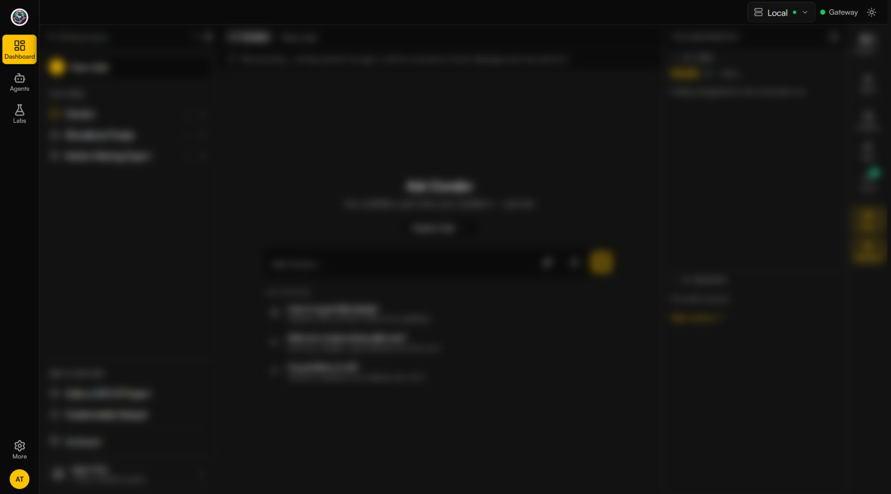
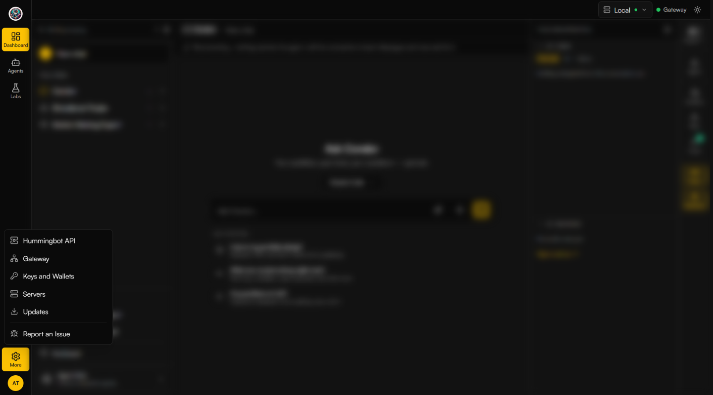
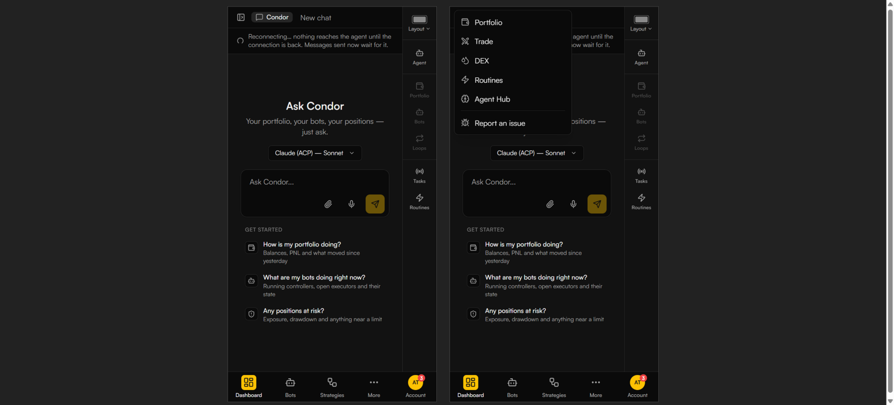
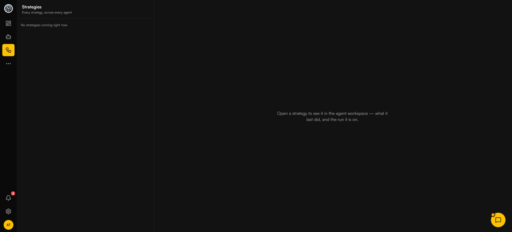

A left icon rail instead of the top nav
Move Condor's navigation from the crowded top bar into a slim left icon rail (Dashboard, Agents, Labs and More), keep only the server, Gateway status and the mode switch in the top bar, put the user behind an initials avatar, and add a bottom tab bar on phones. The look stays the same. Only the layout changes.
Why
The top bar carries seven page links and six controls in one 48 px strip, and it keeps growing as agents, strategies, routines and DEX tools arrive. On phones the links disappear and nothing replaces them. A left rail gives every surface a stable home and frees the top of the screen for the work.
- Vertical navigation scales. Nielsen Norman Group finds left-side navigation leaves room for new categories without redesigning the nav.
- Familiar shape. Slack's 2023 redesign moved to a left rail with the profile at the bottom left; Discord uses an icon rail; the ChatGPT and Claude apps keep navigation in a left sidebar next to the conversation, the same shape as Condor's chat home.
Sources carried over from the first version of this proposal (not re-checked in this revision): NN/G: left-side vertical navigation, Slack Design: a more focused, productive Slack, Stanford IT: the new Slack sidebar, Discord: join a server.
Before
Seven links and six controls share one top strip. Server, Gateway, currency, bell, report and theme controls crowd the same bar. On a phone the page links are gone and the controls overflow.

ui-redesign baseline (full screen, 1280 px wide): seven page links and six controls share one strip across the top.
After
A slim rail, a list panel, then the main area. Rail items: the logo, then Dashboard, Agents and Labs, and at the bottom More (the gear) and an initials avatar. The right side of the top bar shows only Local (the server), Gateway status and Switch Mode.
The rail (PR #3)


The avatar menu (PR #4)
Phones (PR #6)

Labs page (PR #7)

/labs page. It will hold three tools: Design, Backtest and Test Run. The page content is a placeholder for now and is blurred in the image. The old /strategies address redirects to /labs.Rollout
| PR | Branch | Scope | Review status |
|---|---|---|---|
| #3 | ui/side-rail | Left icon rail replaces the top bar (Dashboard, Agents, Labs, More); top bar keeps Local, Gateway status, Switch Mode; More menu with six entries; bell removed | Works, tweaks 1 |
| #4 | ui/account-menu | Avatar menu shows only the user name with role, and Logout | Built, works |
| #6 | ui/mobile-nav | Bottom tab bar on phone widths | Works, tweaks 2 and 3 |
| #7 | ui/strategies-page | /labs page (placeholder body); /strategies redirects to it | Placeholder only |
Stacked PRs, merge in order. Frontend only; routes, the API and panel ids are unchanged, so existing links keep working. Merge the rail first; the onboarding proposal rebases afterwards because both touch AppShell.tsx.
Open points from review
- Hover-only labels (#3). Icons have no visible text, and hover does not exist on phones. Also, the chat page now shows two rails side by side: the new left one and the existing right-hand panel rail (Layout, Agent, Portfolio, Tasks, Routines). Consider visible labels or a clearer split.
- Panel rail on phones (#6). The right-hand panel rail still takes about 60 px of a 390 px screen, so the chat is squeezed. The proposal says the tab bar "replaces the rail"; that is true for the left rail only.
- More menu on phones (#6). It opens as a popover that is clipped at the left edge rather than a bottom sheet. This was seen in a 390 px frame; recheck on a real phone.
- Labs content (#7). The page is a placeholder. Design, Backtest and Test Run still have to be built.
- Notifications (#3). The bell is no longer in the shell, so notifications have no entry point until a home for them is decided.
Not checked yet: light theme, colour-blind mode, a real phone, and pages that need a Hummingbot server with data (Portfolio, Bots, Trade).
Decision requested
Approve replacing the top nav with the left icon rail and the phone bottom tab bar, shipped as PRs #3, #4, #6 and #7 into ui-redesign, subject to the open points above.
Refinement log
Newest first. Add a row for every change that comes out of review.
| Date | Change | Reason / source | PR |
|---|---|---|---|
| 2026-11-27 | Rail proposal revised after review: rail items are Dashboard, Agents, Labs and More; top bar right side is Local, Gateway status and Switch Mode; More lists Hummingbot API, Gateway, Keys and Wallets, Servers, Updates and Report an Issue; bell removed; avatar popup reduced to the user name with role, and Logout; the Strategies page became the Labs page; the Chat list search and filter section (PR #8) was dropped by decision. Page bodies are blurred in the new images so the navigation stands out | User review of the proposal | #3, #4, #6, #7 |
| 2026-11-27 | "Before" images retaken from the old top-nav build, one per row: the full desktop screen at 1280 px, and the phone screen inside a CSS phone frame (same treatment as the onboarding page). The old phone image showed the keys overlay, not the top bar. "After" images unchanged | User review: larger Before images so the text is readable | #13 |
| 2026-11-26 | Page rebuilt as editable HTML in docs/proposals/; screenshots retaken from the PR branches | Previous version was a generated page that could not be edited by every agent | docs |
| 2026-11-26 | Review notes added: hover-only labels, panel rail and More menu on phones | Review of PRs #3, #4, #6, #7 built on rn5 | — |